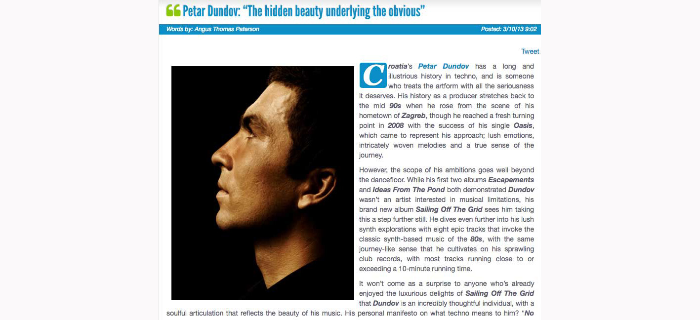
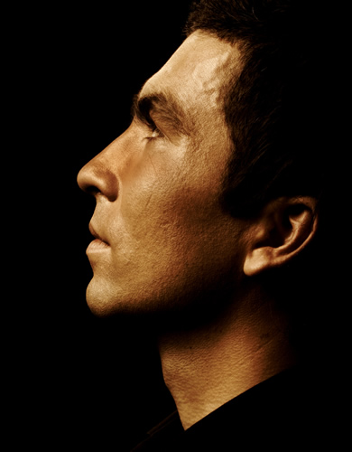
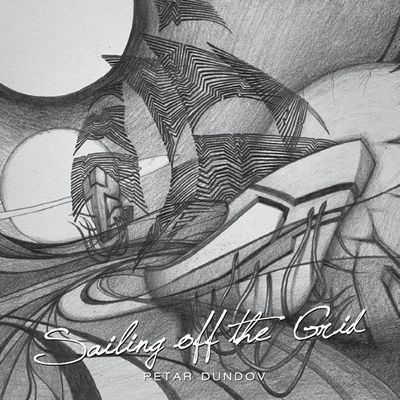
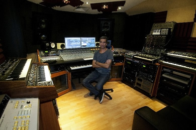

Petar Dundov: “The Hidden Beauty Underlying the Obvious”
{kind=link}

Croatia’s Petar Dundov has a long and illustrious history in techno, and is someone who treats the artform with all the seriousness it deserves. His history as a producer stretches back to the mid 90s when he rose from the scene of his hometown of Zagreb, though he reached a fresh turning point in 2008 with the success of his single Oasis, which came to represent his approach; lush emotions, intricately woven melodies and a true sense of the journey.
{kind=link}

However, the scope of his ambitions goes well beyond the dancefloor. While his first two albums Escapements and Ideas From The Pond both demonstrated Dundov wasn’t an artist interested in musical limitations, his brand new album Sailing Off The Grid sees him taking this a step further still. He dives even further into his lush synth explorations with eight epic tracks that invoke the classic synth-based music of the 80s, with the same journey-like sense that he cultivates on his sprawling club records, with most tracks running close to or exceeding a 10-minute running time.
It won’t come as a surprise to anyone who’s already enjoyed the luxurious delights of Sailing Off The Grid that Dundov is an incredibly thoughtful individual, with a soulful articulation that reflects the beauty of his music. His personal manifesto on what techno means to him? “No rules, just a feeling”.
I Voice goes sailing off the grid to find out what makes Petar Dundov tick.
Congratulations of your new album Sailing Off The Grid. There’s a lot of detail and emotion in there; tell us a bit about your journey and vision for the album.After the Ideas From The Pond release, I had been touring around and I had these songs written down as sketches, lying around my hard drive. It was a fruitful period for me; somehow being on stage encourages you to think about your relationship with the world around you, and when I came home I had this big urge to write all these melodies that were running in my head. Sometimes it might be a motif that I remember, something like a template, and then when I try to translate it into a song, it takes on particular shape of its own. In Autumn 2012 I sat down in my studio, I had couple of guidelines already and I just began recording.
In my albums, I am trying to create journeys that represent motion and stillness intertwined together. There are active and passive states; my main goal is to try to recreate the real life experience where these two states coexist...I believe music is just another way of encoding information, and I am always thinking about new ways of doing just that. This time I went for more of a classical motive, of the hidden beauty that underlies the obvious. There are particular things that we perceive as beautiful, only that we cannot define why we experience it as such. And it is a kind of consensus; there is a ‘grid’ through which we perceive things, which we need in order to understand what we are looking at. It is something that we use to make a relation, and it is this relation from which we can create something that is meaningful for us. So it is not about the conformity or consensus, it is what we can derive from our surroundings through looking through that lens of the conventional. This was my question that I tried to answer with music on Sailing Off The Grid.
It’s your third artist album where you’ve created something with a scope that goes beyond the dancefloor. Do you feel this is an integral part of your artistic identity, that you be able to express your creativity in ways that aren’t limited to club music?Yes I do. I believe that expression doesn't have boundaries. The only limitations are ones we put on ourselves. I don't force myself to write anything, it just happens. As young artist, inspiration for me was always beyond my ability to comprehend it in a sense of being able to translate it to a recording. It took me many years of learning and practicing to be able to write songs that were popping up in my head. Sure, inspiration as a property of the subconscious has much to do with heritage, early influences, and by this I mean not just my own, we need to count in all the music and sound that surrounds us since early childhood. There is one criteria that I follow, and that is if you have something running around your head that is good, then you should write it down. It doesn't matter what is it; if you have inspiration, do it.
That said, I’d say there are still many consistencies between the material on Sailing Off The Grid, and your work as a club producer. Is this something you’d agree with?Completely. It is same basic idea behind it; only here we are talking about another format. Most of my career I have been writing club music, 12” singles, and that’s where I am coming from. On the other side, the beauty of the album format is that you can broaden that expression to create deeper meaning.
{kind=link}

In my albums, I am trying to create journeys that represent motion and stillness intertwined together. There are active and passive states; my main goal is to try to recreate the real life experience where these two states coexist. Active states are usually expressed with clubbing-oriented songs.
Sailing Off The Grid also seems to tip its hat to some of the great synth acts from the 80s. Were there any particularly strong influences for this album?I am child of the 80s. I have been strongly exposed to music of that time. It is somehow embedded in the way I think. It is all there stored in my memory warehouse, and when I play something it resonates strongly with those 80s patterns. I like the passion of that time. People were exploring new possibilities, these were great times for synthesizer music. I was totally into synthesized sound, and still am, so this resemblance of times will never go away.
An interesting point of discussion for your fans often seems to be how strongly you identify as a techno artist, and how much this simultaneously contrasts with what we might typically expect from the genre. How do you view this yourself?When I got involved with techno in the 90s, what attracted me to the genre was that this was the most abstract form of club music. There were no strict boundaries, the music spanned from silky Detroit strings to weird 303 tweaking. No rules, just a feeling. People did music with passion and you could hear that in the songs, and I was instantly drawn to that.
If you talk to people today they don't know what are you referencing, since techno has become a particular form for them. I don't mind this discussion, and usually there are some new insights for people when they confront themselves with these questions.
For me, it will remain the pursuit in expression of sound based on the particular tempo and atmosphere of the emerging world of technology.
Some of the most distinctive elements of your work are the strong sense of a journey you create, often resulting in quite long songs; as well as an equally strong sense of melody. How did these end up becoming your trademarks over the years, do you think?It all started with Escapements album. I moved away from 6-minute limitation of the 12” format, and started to write longer songs. I could do intros slowly, dragging the listener into the story, and then use improvisation to create more complex melodic structures. I introduced the technique of real-time playing, something not usual for this genre.
I have been missing the human component in the music. Somehow we accepted technology for granted, as if that more of it is better. Over time I could not be comfortable with just being the person behind the music that was coming out of speakers. It drew me to the idea of putting an explicit mark, an intervention in real ‘human’ time, something that everyone can hear and connect with. That becomes essential component in all songs that I do.
There’s some quite inspiring musings on the nature of techno in your bio. “Techno is music that precedes movement. It is dance music, solid enough to carry emotions through the dance floor and abstract enough to be a template for ever”. Does techno mean anything different to you in 2013?It would stay with that same definition, even today. Nothing has really changed in my perception of the music. Techno will always stay in the dance domain, because it presumes motion. Evolving it for me would mean creating a closer connection with the real context of today’s world.
{kind=link}

I believe this connection with reality is what keeps music interesting, and brings people together on the dance floor. This sense of being in synchronicity with the world is a big part of our existence, and as artist I’m trying to communicate this idea. In that sense I’m trying to grow.
Zagreb, Croatia is your hometown of course. You have a long history in your country’s dance scene, how have you seen things evolve yourself in recent years?I see more people are recognizing clubbing as a part of culture. Not long ago we were seen as bunch of young people doing some crazy music, and everybody was waiting for us to get over it. All this idea of nightlife and electronic dance music was too abstract for many people in Croatia. Now as times change, and we are more connected with the world, people saw that this as something more than just a weekend thing. I’m not talking about experienced clubbers here, but rather the recognition that comes from the general population. This is important, since it makes things much easier if you want to open a club or throw a party. It’s also much easier for young DJs or artists who want to get involved and pursue club music as career.